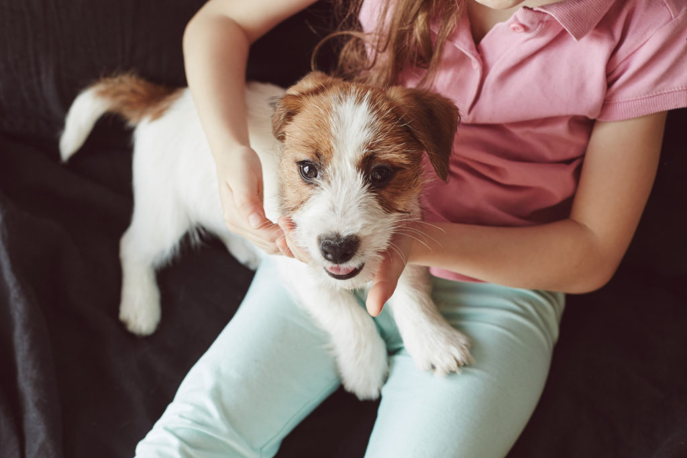
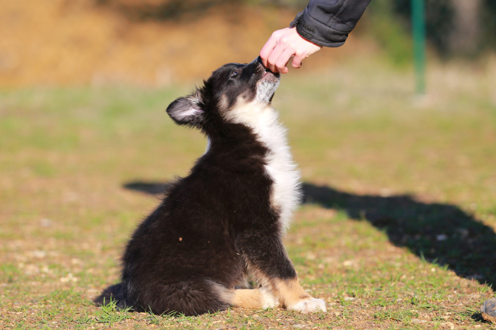
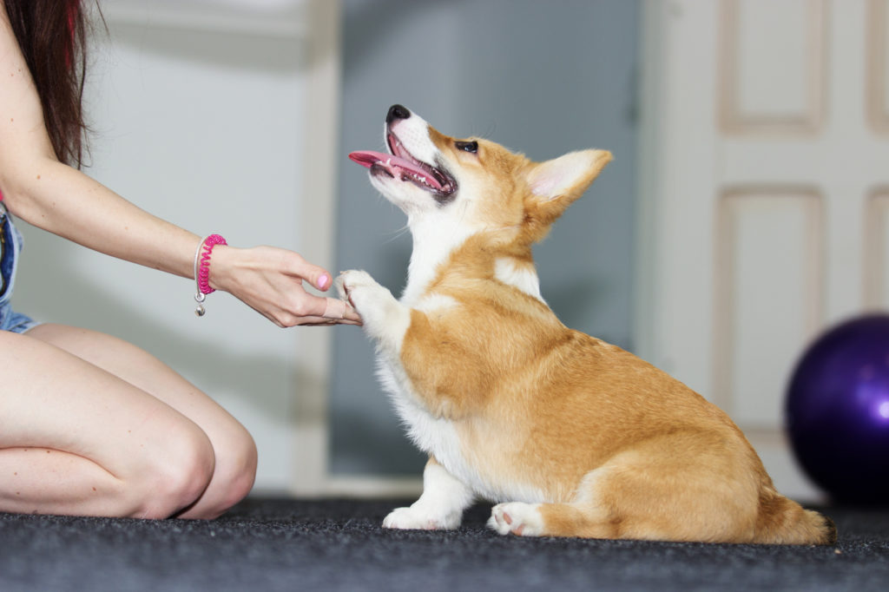
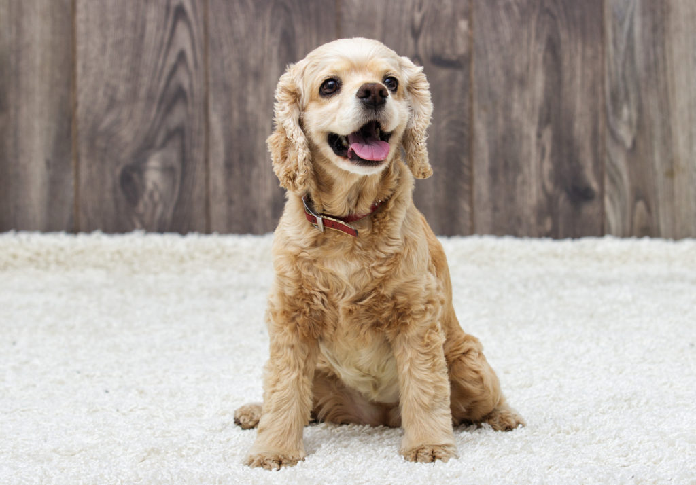

Uma educação consistente e ternurenta é a base para uma coexistência pacífica e descontraída entre cães e humanos. Ensinar aos cães desde o princípio qual a sua posição no seio da família e estabelecer limites não só tem um efeito positivo na harmonia da casa, como também impacto no desenvolvimento saudável do animal. Os cães são animais que precisam de estruturas definidas e regras em prol do seu bem-estar mental. Donos descuidados ou inseguros que permitam qualquer comportamento ao seu cão ou que sejam pouco consistentes, acabam por confundir os animais, o que poderá levar, consequentemente, a atitudes perigosas ou indesejadas, difíceis de mudar.

O que deve ensinar ao seu cachorro?
Será que um cachorro deve aprender tudo para que a sua vida adulta corra na perfeição? Qual o momento ideal para começar a treinar o animal? É normal colocar todas estas questões quando um novo cachorrinho faz parte ou está prestes a fazer parte da sua família. É verdade – um animal intempestivo pode pôr a vida familiar de pernas para o ar... O mais importante é mostrar desde o início ao seu pequeno terramoto o que pode e não pode fazer.
Estabelecer limites desde o início
Mas o seu novo amiguinho, com os seus olhos doces e as suas patinhas acolchoadas, tornará-lhe-á mais difícil a tarefa de ser um dono consistente. Será capaz de resistir a um cachorro quando este lhe suplica por um pedaço de salsicha ou quando decide fazer-lhe companhia na cama? Mas como poderá um cão adulto perceber que, a certa altura da sua vida, já não lhe são concedidos determinados privilégios? Assim sendo, o melhor será deixar bem claro desde o início como imagina a vida em conjunto com o seu cão, que tipo de comportamentos são importantes para si e quais aqueles que não tolerará. Se seguir esta linha de pensamento desde o início, o seu cão saberá qual o seu lugar e dificilmente lhe causará problemas, mesmo na idade adulta.
A hierarquia deve ser bem definida
Cães que tenham assimilado desde tenra idade quem manda em sua casa, normalmente aceitam-no durante toda a vida – manterá, assim, também a posição de líder. Ainda que o estilo autoritário se encontre ultrapassado no que diz respeito à liderança em empresas e na educação infantil, no caso do treino canino não há alternativa. Os cães precisam de confiar nos donos – de forma a obedecerem às suas decisões e ordens, os animais devem poder confiar no seu julgamento. Ordens claras, um tom de voz calmo mas determinado e uma linguagem corporal consistente transmistem segurança ao seu cão.
Ordens e sinais claros
Os cães são mestres das expressões faciais e mais facilmente reagem a movimentos simples de mãos do que a frases complexas, cujo sentido apenas podem aferir a partir do tom de voz do dono. Pense cuidadosamente acerca de ordens básicas como “senta“, “anda“, “de pé“ e a que gestos as pode associar. Mantenha as diretrizes simples e estruturadas utilizando sempre as mesmas palavras-chave e gestos. Para evitar mal-entendidos evite usar frases longas como “Biscoito, agora deverás esperar pacientemente à porta do supermercado, pois os donos vão às compras“. É essencial que a aprendizagem das ordens básicas seja feita através de instruções curtas e claras e associadas aos mesmos comportamentos.

Aprenda a motivar através do reforço positivo
Confiança e ordens claras são essenciais para treinar e educar o seu cão. Ser demasiado severo não é necessário – pelo contrário, ao agir assim estará a assustar os sensíveis patudos. A verdade é que ninguém quer que os seus fiéis amigos obedeçam às regras por medo, mas sim por prazer. Mas como fazer com que o seu cachorro goste de aprender? Elogios e recompensas são importantes para motivar os animais. Repreensões e castigos são atitudes desmotivadoras e demovem-os do caminho certo.
O que devo ensinar ao meu cachorro?
Nem sempre é fácil saber, a cada momento, o que um cachorro deve estar a aprender, isto é, que comportamentos recompensar e que comportamentos ignorar. As dicas e sugestões relativas à educação do animal estão por todo o lado – vindas de amigos, especialistas e da internet –, podendo facilmente sobrecarregar os donos. É essencial, portanto, elencar as regras principais que pretende que sejam assimiladas pelo animal e torná-las parte da rotina. Isto será, certamente, um enorme desafio ao início, mas tornará a vida em conjunto com o animal muito mais tranquila no futuro. Experimente fazer uma lista das regras básicas. Depois de ter dado início aos treinos, pode elaborar um diário, anotando os métodos que surtiram efeito positivo e negativo.

Conheça as bases da educação
Nem todos os exercícios importantes passam por praticar ordens. Os cachorrinhos, normalmente separados das mães pela oitava semana de vida, são entregues à sua nova família e necessitam em primeiro lugar de se habituar a um ambiente que desconhecem. Os animais precisam de ganhar confiança nos donos, aperceber-se das suas regras e aprender a lidar com desconhecidos, tanto pessoas como animais. Após a chegada do animal, é importante dedicar-se exclusivamente a ele, oferecendo-lhe amor e segurança. Chame o seu cachorro pelo nome, dê-lhe mimos e ofereça-lhe guloseimas da sua mão – tudo para criar um ambiente de confiança e fazer com que o animal se sinta confortável consigo. Esta constitui a base para quaisquer objetivos educacionais.
Domesticar o cachorro
Desde os primeiros dias em casa que pode domesticar o seu cachorro. Leve-o à rua a cada duas ou três horas e elogie-o caso consiga fazer as necessidades durante o passeio. Introduza rotinas de passeio, por exemplo, ao acordar, depois de almoço e ao deitar. É importante monitorizar o seu cachorro atentamente. Se andar a cheirar nervosamente pelo apartamento este é provavelmente um sinal de que precisa de ir à “casa de banho“. Não o insulte caso no início não aguente e se alivie no tapete da casa – se o apanhar em flagrante, um som de desagrado é suficiente para o fazer entender que não concorda com o comportamento. A educação básica não se faz de um dia para o outro e requere muita paciência.
Estabeleça limites para ladrar, morder e arranhar
Os cachorros gostam de explorar o mundo com a ajuda da sua boca. Naturalmente não sabem que a mobília é algo valioso nem que as pessoas são mais sensíveis às dentadinhas do que os seus companheiros de ninhada. É então necessário demonstrar-lhe quais os limites. Ao censurar comportamentos indesejados e elogiar comportamentos desejados, o animal entenderá quais os limites e quais as atitudes que conduzem a recompensas.
Aprender a esperar
À semelhança de responder à chamada, também a espera deve ser treinada. O animal deve aprender a não saltar do carro imediatamente a seguir a abrir a porta da bagageira e a não correr desde logo para a comida quando ouve o dono a abrir a embalagem. Estes são comportamentos a que não deve responder. Feche a porta do carro logo que se aperceba de que o animal está a tentar sair; apenas lhe deve abrir novamente a porta após ter aguardado pacientemente.

Repita esta sequência até que o animal permaneça sentado mesmo com a porta aberta – aqui deverá recompensá-lo ao deixá-lo, finalmente, sair. Experimente a mesma estratégia com a comida. Não lhe encha o comedouro até que o animal fique calmo e espere pacientemente e ponha-lhe o comedouro ao dispor apenas quando parar de ladrar. Caso o cachorro se dirija de imediato ao comedouro sem que lhe tenha dado permissão para comer, afaste a tigela. Somente após ter esperado quieto até lhe ter dado sinal para comer é que o animal pode esvaziar o comedouro.
Aprender a ficar sozinho
Entre as doze e as dezoito semanas de vida do cachorro deverá começar a habituá-lo a ficar sozinho. É claro que nunca deve deixar um cão adulto demasiado tempo sozinho, mas a verdade é que ocorrem situações inesperadas no dia a dia e o animal não deve ficar muito perturbado pelo facto de ficar sozinho. Desta forma, deve ensinar desde cedo ao seu cachorro que não pode acompanhá-lo a todo o lado. A melhor estratégia é incorporar o treino para ficar sozinho no quotidiano e não dar grande importância ao facto. Saia da divisão da casa onde se encontram ambos uma vez ou outra, sem se despedir. Volte a entrar e aja com naturalidade. Gradualmente, aumente o tempo que está fora da divisão, isto até o cachorro aprender a estar sozinho mais tempo. Apenas quando tiver a certeza de que o animal permanece calmo é que poderá sair e deixá-lo em casa. Se o cão for muito afeiçoado a si e começar imediatamente a ladrar e a gemer quando sai de casa, experimente alterar a estratégia e apenas regresse quando este se acalmar. Se não se sentir confortável em deixar o cão agitado e sozinho, ignore-o ao entrar novamente na divisão. Quando este se acalmar, ofereça-lhe uma recompensa.
Cuidados de higiene
Ter um cão como animal de estimação significa não só alimentá-lo, educá-lo e levá-lo a passear, mas também proporcionar-lhe cuidados de higiene. O pelo deve ser escovado regularmente; patas, orelhas e dentes devem ser inspecionados e as unhas devem ser cortadas. Desde o início da vossa vida em conjunto que o animal se deve habituar a estes rituais e manter-se quieto. De forma a facilitar as futuras examinações do médico veterinário, habitue o cão ao seu toque – nas orelhas, patinhas e barriga. Ao aninhar-se com o cachorrinho no sofá faça-lhe festas na barriga, mexa-lhe nas orelhas, agarre-lhe nas patinhas por alguns momentos, massaje-o ou abra-lhe a boca com a sua mão. Notará que o animal vai ficando cada vez mais relaxado com o passar do tempo e que aprecia estes cuidados.